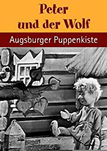

IMDB-Wertung: 0.0 / 10
IMDB-Wertung: 0.0 / 10  Metascore:
Metascore: 
 IMDB-Wertung: 0.0 / 10 Metascore:
Jahr: 1970
Dauer: 29 Minuten
FSK:
Land: West-Deutschland Studio: ZDFTonspuren:
Untertitel:
Auflösung: SD (640x480) Größe: 290 MB
Genre: Musik, Fantasy, Kurzfilm
Regisseur: Ekkehard Böhmer
Drehbuch: Sergei Prokofiev
Soundtrack: Sergei Prokofiev
Darsteller:
Datei: X:\Kinder Serien\Augsburger Puppenkiste\Peter und der Wolf\Augsburger Puppenkiste - Peter und der Wolf.avi seit 16.11.2019
Festplatte: Kinder-Filme+Trick
 Es gibt insgesamt 56 Filme in der Gruppe 'Kinder Serien'
Es gibt insgesamt 56 Filme in der Gruppe 'Kinder Serien'